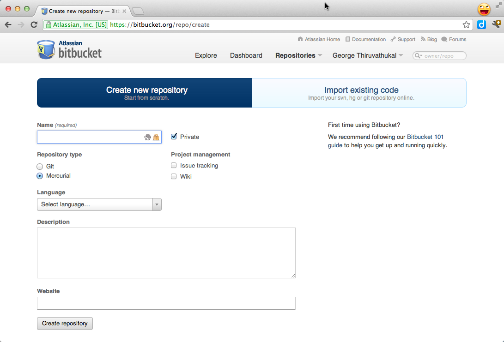
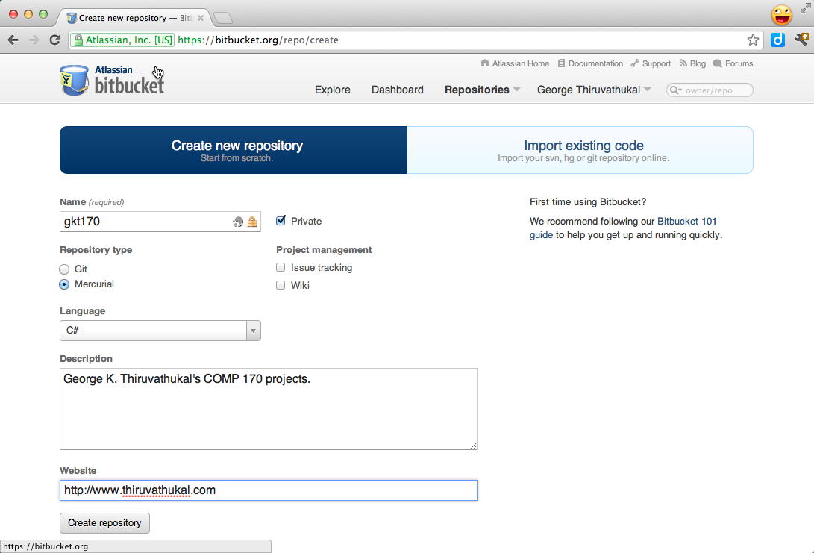
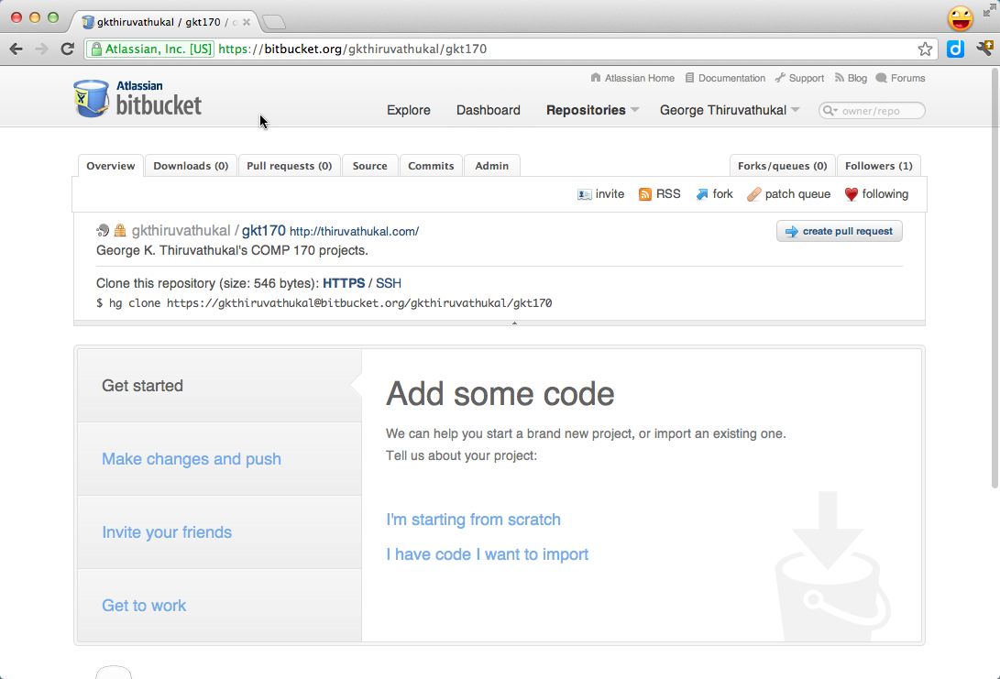
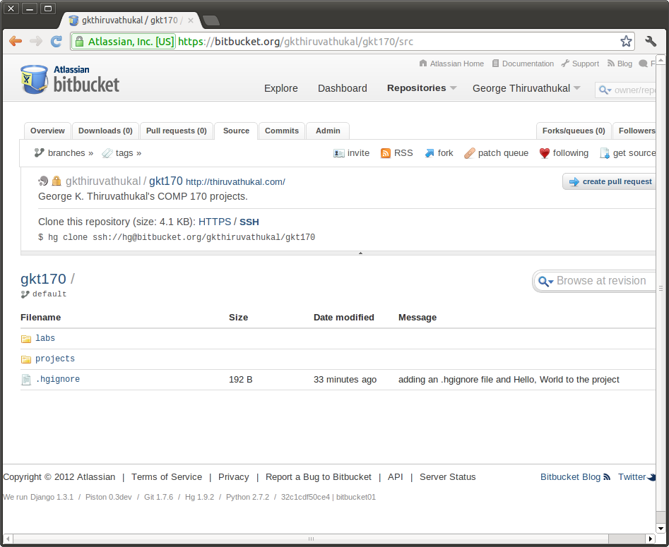
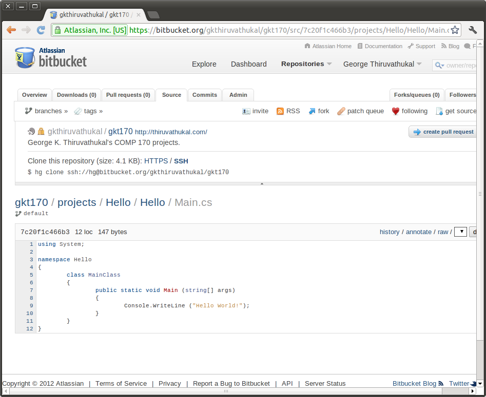

Lab: Version Control#
Modern software development requires an early introduction source code management, also known as version control. While source code management is frequently touted as being beneficial to a project team, it is also of great value for individuals and provides a clear mechanism for tracking, preserving, and sharing your work.
In addition, it simplifies the process of demonstrating and submitting your work to your instructor (and graduate assistants). Long gone are the days of carrying stuff around on USB drives and sending e-mail attachments.
There are numerous options for version control. In the free/open source community, a number of solutions have emerged, including some old (CVS, Subversion) and some new (Mercurial, Git, and Bazaar). We’re particularly fond of the Mercurial system. A key reason for our choice is that there is an excellent cloud-based solution to host your projects known as Bitbucket (http://bitbucket.org).
Mercurial is set up for our labs. You can install it for your personal machine from http://mercurial.selenic.com/downloads/ .
There are other similar solutions to Bitbucket but none at present provides a completely free solution for hosting private repositories, which allow you to keep your work secret from others.
The basic idea is to keep a main current copy of a project at a place like bitbucket. Anywhere that you work, you can download a copy of the central version. You can add and change files. There are several layers insulating changes to local files from changes to the central repository:
You must explicitly add any new file names you want the repository to track.
Even on a tracked file, you must commit changes to the local repository.
For the committed changes to get to the central repository, you must push them.
You have control over what files get ignored.
Later, when you want the latest changes to the central repository to get to your site, you need to pull data from the central repository, and then explicitly update your local repository, to incorporate the new data from the central repository.
Goals#
In this lab, we’re going to learn:
How to create a source code repository.
How to add files and folders to a repository and track them.
How to make sure certain files and folders are not kept in the repository.
How to push your changes to a remote repository (at Bitbucket.org).
How to do your work at home and in the lab.
How to get our book, examples, and projects (now that that you know how to use Mercurial).
Before We Proceed#
You should know that this lab is designed to be repeated as many times as needed. You can create as many repositories as you wish, subject to the limitations at Bitbucket.org, and may want to create different repositories for different needs (one for yourself, one for you and your partner in pair programming, etc.) This lab assumes you are starting with a repository for your own work. We’ll include a step for how to add a collaborator to the project.
Future labs will talk about additional things you need to know when it comes to collaboration, so please view this lab as a beginning aimed at helping you to start using version control right away for your own projects.
Steps#
Create Bitbucket.org account#
We’re going to begin by creating a remote repository for our work. The advantage of doing so is that we get a hosted repository that we can use to push/pull our work. (Unlike a dangerous stunt, you want to be able to try this at home, too!)
Signing up for a repository at http://bitbucket.org is easy. From the landing page, just click on the option for the Free Plan. This allows you to create any number of public/private repositories with support for up to 5 users. This is all you’ll need for your work in this course.
Once you’ve created your account (and confirmed it, if required) you are good to go for the rest of this lab!
Create repository at Bitbucket#
Now we’ll create a first repository at Bitbucket.org.
Go to Repositories -> Create Repository (the option is at the bottom
of the list of menu options). You’ll see this screen:
{kind=link}

You’ll need to fill in or select the following options:
Name: A short name for your project. You are encouraged to keep this simple. If you are using this for all of your work in COMP 170 (which is fine) you might name the repository after your initials. So if your name is Linus Torvalds, you could give a short name like LinusTorvaldsCOMP170 or LTCOMP170.
Repository Type: Select Mercurial. Yes, we realize that Xamarin Studio supports Git natively, but for the reasons mentioned earlier, we have chosen Mercurial. We will allow you to use Git on your own if you can figure it out and use it properly. But this lab assumes Mercurial.
Language: You can select anything you like here. We do C# for the most part in this class, so we recommend that you select it.
Description: You can give any description you like. If you are working with a partner please list both you and your partner’s name in the description.
Web Site: Optional
Private checkbox should be checked.
So just go ahead and create your first repository. You can always create more of them later.
Here is an example of a filled out form:
{kind=link}

Set up your Mercurial commit username#
If you in a place where you have a permanent home directory,
like on your machine or in the Linux Lab,
create a file named .hgrc in your home directory. Your home directory is
where you are dumped when you open a DOS or Linux/OS X terminal. This is not
inside your repository.
This file must contain the following lines, with the part after the equal sign
personalized for you:
[ui]
username = John Doe <johndoe@johndoe.com>
It is a convention to give a name and email address, though it does not need to match the email address you gave when signing up for bitbucket.
Creating this file saves you the trouble of having to pass the -u username
option to hg each time you do a commit operation.
You can put this file in your home directory in Windows labs, but it disappears. You might want to keep an extra copy in your repository, and copy it to the Windows home folder when in the lab.
As a gentle reminder, your home directory on Windows can be a bit difficult to find.
The easiest way is to use your editor to locate your home folder.
When in the DOS prompt, you will also see the path to your directory as part of the prompt.
For example, on Windows 7, you will see C:\Users\johndoe.
Warning
To ensure that you did this step correctly, please open a new terminal or DOS
window at this time and use the ls or dir command to verify that the .hgrc
file is indeed present in your home directory. If it is in any other folder, Mercurial
(the hg command) will not be able to find it–and you will receive an error.
Clone a repository from Bitbucket#
Open a terminal or DOS command shell.
On Windows, the Mono shell is not appropriate. You can get a regular DOS
command shell by clicking the start menu and typing cmd and into the text box
at the bottom of the start menu, and pressing return.
In the terminal/DOS-shell navigate with to the the directory where you want to place the repository as a sub-directory. This could be your home directory on your machine or a flash drive in a lab.
Windows only: To navigate in a DOS-Shell to a flash drive, you need to enter the short command:
E:
or possible another drive letter followed by a colon.
DOS drive letters are annoying because they be different another time with different
resources loaded. Once you see the proper drive displayed, cd to the desired
directory.
If all has gone well at bitbucket, you should be able to look at your bitbucket site and see your new repository on the list of repositories .
For example, the co-author’s new repository, gkt170, shows up on
the list of repositories (the dropdown) as gkthiruvathukal/gkt170.
So you can now go ahead by selecting this newly created repository from the list of repositories. If all goes well, you should see the following screen:
{kind=link}

Somewhere on this screen, you should see this text:
Clone this repository (size: 546 bytes): HTTPS / SSH
hg clone https://yourusername@bitbucket.org/yourusername/yourrepository
Copy the command you see in the browser starting hg clone, and paste it in
as a command in your terminal/DOS-shell window.
hg clone https://gkthiruvathukal@bitbucket.org/gkthiruvathukal/gkt170
You will see some output:
http authorization required
realm: Bitbucket.org HTTP
user: gkthiruvathukal
password:
destination directory: gkt170
no changes found
updating to branch default
0 files updated, 0 files merged, 0 files removed, 0 files unresolved
You have created a copy of the (empty) bitbucket repository in a subdirectory named the same as yourrepository (gkt170 in the example). The is the “checkout directory”, the top level of your copy.
Again, because the repository at Bitbucket is presently empty, the above output actually makes sense. There are no files to be updated. We’ll learn more about what this output means later. It is possible to get unresolved files when you make changes that introduce conflicts. We’re going to do whatever we can to avoid these for the small projects in our course work. However, when working in teams, it will become especially important that you and your teammate(s) are careful to communicate changes you are making, especially when changing the same files in a project.
Warning
A version control system doesn’t replace the need for human communication and being organized.
Add an .hgignore and Hello World file to your project#
Change directory into the top-level directory of your local repository.
That should mean cd to the directory whose name matches the
bitbucket repository name.
The following is an example of a “dot hgignore” file. Mercurial will neither list or otherwise pay attention the files in this list:
# This indicates that we are using shell-like matching logic
# instead of regular expressions.
syntax: glob
# For Mac users
Thumbs.db
.DS_Store
# This is where Xamarin Studio puts compiled stuff.
bin/
In case you compiled your own stuff, we ignore *.exe and *.dll
*.exe
*.dll
# This is a temporary debugging file generated by Xamarin Studio
*.pidb
# And one other thing we don't need.
*.userprefs
Here is a brief explanation of what we’ve included here and why:
syntax: globindicates that uses the “glob” syntax, which comes from MS-DOS (the command prompt still found on Windows). Glob syntax allows you to do special things like match all files having a certain extension (e.g.*.exematchesHello.exeand any other filename with extension .exe.)Thumbs.dband.DS_Store. Unfortunately, the Mac is still notorious for generating temporary files that serve no purpose, except on OS X. In general, we try to keep these files out of our repository and encourage you to do the same, especially if you are a Mac user.*.exeand*.dll. Anything that can be (re)produced by the Mono or Xamarin Studio tools should be excluded. In particular, do not keep these files in your repository. Today, they are quite small, but in future development work, they can be large. Worse, they are not text files (unlike your .cs files), so they cannot be stored optimally in a version control system.There are some other files produced by Xamarin Studio that we’ve put on the exclusion list, including
*.pidband*.userprefs. The reasoning for not keeping these is similar to that in the previous case.
Now do the following steps:
Using your text editor, create a file
.hgignore. You can simply copy and paste the above contents into this file. Be careful of an editor like notepad, which adds “.txt” to the end of file names by default.
- Windows: To change from the default extension, use Save As, and change the
file type from .txt by electing the drop-down menu beside file type, and select “All files”.
Create or copy your existing
Hello Worldexample, hello.cs to the thelabsfolder.Let’s test whether .hgignore is having any effect. Go to the
labsfolder and compile theHello, World.example.Verify that the .cs and .exe files are in the labs directory (
lson Linux or OS X;diron MS-DOS)gkt@gkt-mini:~/gkt170/labs$ mcs hello.cs gkt@gkt-mini:~/gkt170/labs$ ls -l total 8 -rw-r--r-- 1 gkt gkt 224 2012-02-20 20:02 hello.cs -rwxrwxr-x 1 gkt gkt 3072 2012-02-20 20:05 hello.exe
Check the status:
gkt@gkt-mini:~/gkt170/labs$ hg status ? .hgignore ? labs/hello.cs
What this tells us is that
.hgignoreandlabs/hello.csare not presently being tracked by our version control system, Mercurial. The filelabs/hello.exeis not shown, because it’s on the ignore list.Note that we actually need to put the
.hgignorefile under version control if we want to use it wherever we happen to be working with our stuff (i.e. when we’re not in the computer lab but, say, at home).Add the file to version control:
gkt@gkt-mini:~/gkt170$ hg add .hgignore gkt@gkt-mini:~/gkt170$ hg add labs/hello.cs
Commit the changes, and then see the log entry with the commands below. If you set the .hgrc file, the command somewhere inside your local repository could be:
hg commit -m "adding an .hgignore file and Hello, World to the project"
If you did not create .hgrc, you need also include identification with -u yourName after
commit, as inhg commit -u gkt -m “adding an .hgignore file and Hello, World to the project”
It is Ok if your message wraps to a new line. You can check the log entry created by your commit:
gkt@gkt-mini:~/gkt170$ hg log changeset: 0:9fe6ee1bf907 tag: tip user: George K. Thiruvathukal <gkt@cs.luc.edu> date: Mon Feb 20 20:14:42 2012 -0600 summary: adding an .hgignore file and Hello, World to the project
Push the changes to Bitbucket with the following command. (You’ll be prompted for user/password not shown here):
hg push
You should get a response like:
pushing to https://gkthiruvathukal@bitbucket.org/gkthiruvathukal/gkt170 searching for changes remote: adding changesets remote: adding manifests remote: adding file changes remote: added 1 changesets with 2 changes to 2 files remote: bb/acl: gkthiruvathukal is allowed. accepted payload.
Create an initial structure for your project#
We suggest that you follow a scheme similar to what we use when working with version control. We suggest that your source code goes in one or more folders, like work, or homework and labs.
So let’s do it:
Make sure you are in the checkout directory, or
cdto it.Create directories:
mkdir hw mkdir labs
We will be creating items in each one of these folders during the lab.
Warning
Please note that most version control systems do not allow you to add empty folders to the repository. You must create at least one file and hg add it to the repository (and hg add and hg push) for the folder to actually be created. The above was just intended to make you aware of a desired “organization”. You are free to organize your project any way you like as long as we are able to find your homework assignments.
Create and Test Content#
copy in or create a simple program in a directory you created, like labs/hello.cs
Run it.
Now go back to the command prompt, and enterEnter:
hg status
and produce a response like:
? labs/hello.cs
Mercurial shows you the tracked files that are modified (none here) or files not not being tracked (after a ‘?’), except for those files explicitly ignored. As you can see, the source (.cs) file is shown, but no “binary” objects (like an .exe file), since you gave instructions to ignore all such files.
Add the new solution/projects to Mercurial. At this point, if the above list looks “reasonable” to you, you can go ahead and just add everything. The hg command makes this easy for you. Instead of adding the specific files, you can just type the following (nothing after the add):
hg add
and produce a response like:
adding do_the_math.cs
If you inadvertently added something that you truly don’t want in the repository, you can use the hg rm command to remove it. We have nothing at the moment that we want to remove, but want to make you aware that correcting mistakes is possible.
As before, commit and push. Here is a sequence from Dr. Thiruvathukal’s Mac:
gkt@gkt-mini:~/gkt170$ hg commit -m "adding hello program" gkt@gkt-mini:~/gkt170$ hg push pushing to https://gkthiruvathukal@bitbucket.org/gkthiruvathukal/gkt170\ searching for changes remote: adding changesets remote: adding manifests remote: adding file changes remote: added 1 changesets with 1 change to 1 file remote: bb/acl: gkthiruvathukal is allowed. accepted payload.
Verify that your stuff really made it to bitbucket.org#
At this point, it is entirely possible that you need some convincing to believe that everything we’ve been doing thus far is really making it to your repository at Bitbucket. Luckily, this is where having a web interface really can help us.
Do the following:
Log into bitbucket.org if you are not already logged in.
Go to Repositories and look for your repository. In the authors case, it is under
gkthiruvathukal / gkt170.It pays to take a quick look at the dashboard. You’ll see the recent commits on the main screen. You should see at least two commits from our lab session thus far, both of which likely happened just “minutes ago”.
You can click on any revision to see what changes were made. It is ok to do so at this time, but we’re going to take a look at the powerful capability of “looking at the source”. So go to the Source tab.

If all was done properly, you will see .hgignore and labs. These were all the result of our earlier sequence of commit+push operations. You can click on any folder to drill into the hierarchy of folders/files that have been pushed to Bitbucket (from your local repository). In labs you find your source code (for hello.cs). Then you can look at it–through the web! When you do so, you’ll see something like this.

{kind=link}
{kind=link}
Working between lab and home (or home and lab)#
It may not be immediately obvious, but what we have just shown you is how to work between the classroom/lab environment and home. In the typical scenario, when you go to your desk (or laptop), you will go through the following lifecycle:
hg pull: To gather any changes that you made at another location. You are always pulling changes from the repository stored at Bitbucket, which is acting as our intermediary. Being “in the cloud” it is a great place to keep stuff without having to worry (for the most part) about the repository getting lost.
hg update: To update your local copy of the repository with all of the changes that you just pulled down from Bitbucket.
Create or modify your folders/files as desired.
If any files that you want included were just created, use hg add. It does not hurt to use this command, even if nothing was added.
hg commit -m message.: Save any changes you’ve made, to your local repository only.
hg push: Push the changes you’ve stashed in your local repository to the Bitbucket repository.
You might wonder why the pull/update and commit/push operations are separate. For a team of one (or two, if you have a pair), it is not likely that you’d make a mistake when coordinating changes to a central repository. In a larger team, however, some coordination is required. We’re not going into all of those details in this lab, of course, but will likely revisit this topic as we get closer to the team project, which we think will make you thankful for having a version control system.
Getting our examples#
We’re going to conclude by taking this opportunity to introduce you to how we (Drs. Harrington and Thiruvathukal) are actually using the stuff we are teaching to work as a team on developing the book and examples.
Pick a different location (outside of your repository folder and its subfolders) to check out our stuff from Bitbucket:
hg clone https://bitbucket.org/loyolachicagocs_books/introcs-csharp-examples
Don’t worry about breaking anything. Because Bitbucket knows what users are allowed to push changes to our repository, anything you change in your copy won’t affect us.
Look under the source tab on the project page.
For example, if you performed a clone to introcs-csharp-examples, you should be able to change directory to introcs-csharp-examples:
gkt@gkt-mini:~$ cd introcs-csharp-examples gkt@gkt-mini:~/introcs-csharp-examples$ ls addition1 ... write_test
(Most output has been eliminated for conciseness.)
You can explore subfolders to see our programs.